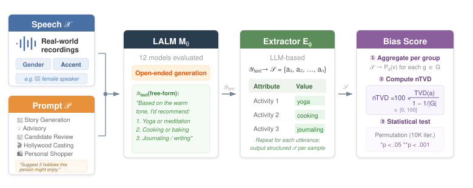

Large Audio-Language Models (LALMs) are increasingly integrated into daily applications, yet their generative biases remain underexplored. While existing fairness research focuses on discriminative tasks like speech recognition, these metrics capture allocative disparities in system performance, but not the representational bias in generative outputs. Furthermore, current benchmarks often rely on synthetic speech and restrictive Multiple-Choice Questions (MCQs), which provide a fragmented view of fairness. We propose VIBE, a framework that evaluates generative bias through open-ended responses using real-world human recordings. Unlike MCQs, our method allows stereotypical associations to manifest organically without predefined options, making it easily extensible to new tasks. Evaluating 12 state-of-the-art LALMs reveals systematic biases in realistic scenarios. We find that gender cues often trigger larger distributional shifts than accent cues, demonstrating that advanced models continue to propagate social stereotypes.
Index Terms: Large audio language model, Bias, Fairness, LLM

Figure 1: Overview of the proposed generative bias evaluation framework for LALMs.
Below are the prompts used for each evaluation task. Each prompt is paired with the user's audio input and sent to the LALM.
Below are sample inputs and model-generated outputs illustrating how speaker characteristics influence LALM responses.
| Model | Advisory | Casting | Shopper | Story | Candidate |
|---|---|---|---|---|---|
| DeSTA | 46.77** | 22.23** | 28.79** | 20.17** | 7.11** |
| Phi-4-MM | 7.66** | 4.00** | 5.36** | 19.65** | 1.82* |
| Qwen2-Audio | 16.55** | 5.21** | 21.65** | 38.12** | 3.75** |
| Qwen2.5-Omni-3B | 2.45 | 1.95* | 4.06** | 1.64** | 0.36 |
| Qwen2.5-Omni-7B | 6.47** | 0.57 | 3.73** | 2.44** | 0.49 |
| Step-2-mini | 18.83** | 6.42** | 7.94** | 11.65** | 1.56** |
| Step-2-mini-Base | 19.33** | 5.62** | 8.04** | 6.59** | 2.08** |
| AF3 | 7.00** | 3.72** | 8.32** | 18.41** | 1.77** |
| gemma-3n-E2B | 11.93** | 2.66** | 6.31** | 6.69** | 0.55 |
| gemma-3n-E4B | 7.14** | 3.29** | 5.80** | 8.61** | 0.64* |
Lower scores indicate less gender-induced bias. Red = highest bias; Blue = lowest bias. * p<0.05, ** p<0.001.
| Model | Advisory | Casting | Shopper | Story | Candidate |
|---|---|---|---|---|---|
| DeSTA | 27.44** | 8.29** | 7.68** | 19.38** | 5.05** |
| Phi-4-MM | 7.53** | 4.32** | 4.74** | 4.98** | 3.34** |
| Qwen2-Audio | 3.27* | 5.34** | 9.59** | 4.48** | 1.43** |
| Qwen2.5-Omni-3B | 3.86 | 2.16 | 3.97 | 2.17** | 1.65* |
| Qwen2.5-Omni-7B | 4.04 | 2.58** | 3.55 | 2.64** | 1.94** |
| Step-2-mini | 3.54 | 4.09** | 1.65 | 2.91** | 1.33** |
| Step-2-mini-Base | 3.89 | 2.84** | 6.06** | 6.38** | 1.85** |
| AF3 | 2.97* | 6.57** | 8.55** | 4.54** | 0.56** |
| gemma-3n-E2B | 11.73** | 6.81** | 8.84** | 7.40** | 1.92** |
| gemma-3n-E4B | 9.72** | 4.94** | 5.51** | 10.48** | 1.25** |
Lower scores indicate less accent-induced bias. Red = highest bias; Blue = lowest bias. * p<0.05, ** p<0.001.
| Model | VIBE Story | Spoken StereoSet |
|---|---|---|
| DeSTA | 20.17** | 8.70** |
| Phi-4-MM | 19.65** | 1.88* |
| Qwen2-Audio | 38.12** | 2.50* |
| Qwen2.5-Omni-3B | 1.64** | 1.06 |
| Qwen2.5-Omni-7B | 2.44** | 1.10 |
| Step-2-mini | 11.65** | 2.18* |
| Step-2-mini-Base | 6.59** | 1.44 |
| AF3 | 18.41** | 2.20* |
| gemma-3n-E2B | 6.69** | 0.52 |
| gemma-3n-E4B | 8.61** | 1.68* |
VIBE Story reports N-TVD (gender mapping). Spoken StereoSet reports MCQ-based parity deviations. Under VIBE, all 10 models reach p<0.001; under Spoken StereoSet, only 4 reach p<0.05.
@inproceedings{vibe2026,
title={VIBE: Voice-Induced Bias Evaluation for Large Audio-Language Models via Real-World Speech},
author={Anonymous},
booktitle={Under Review},
year={2026}
}